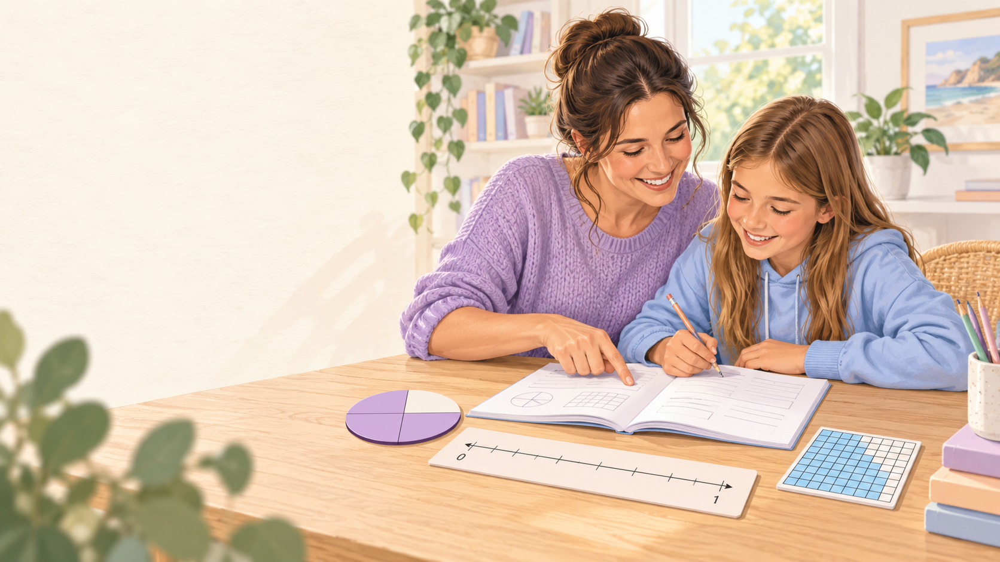
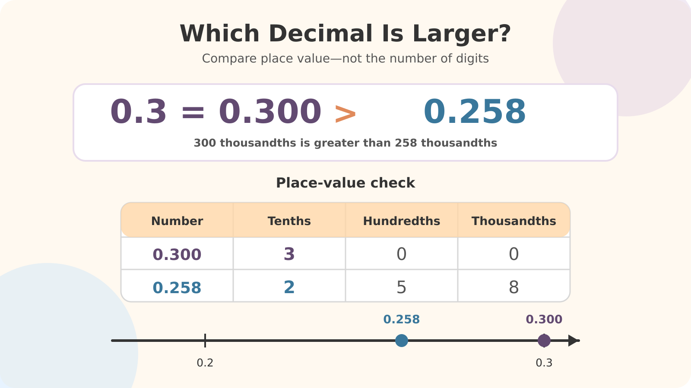
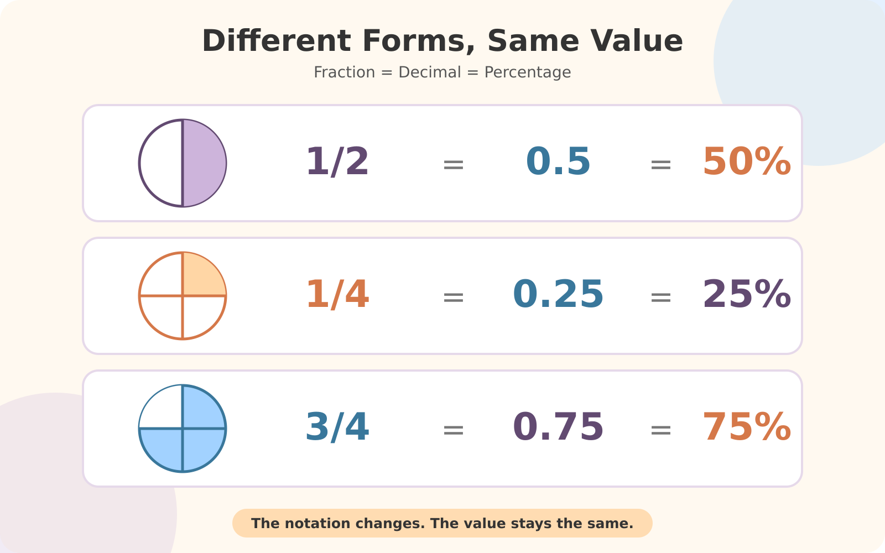

Why Fractions, Decimals and Percentages Matter
If you have ever looked at your child’s maths homework and wondered why 0.3 is greater than 0.258, you are not alone.
Year 6 students work with fractions, decimals and percentages in increasingly practical situations. They may need to compare values, calculate a percentage discount, find a fraction of a quantity or decide which representation is most useful.
The good news is that you do not need complicated mathematical language to help. Once your child understands that fractions, decimals and percentages can represent the same amount, the topic becomes much more manageable.
Year 6 Curriculum Connections
| Curriculum connection | What students learn |
|---|---|
| AC9M6N03 | Compare, order and represent common fractions using equivalence and number lines. |
| AC9M6N07 | Solve problems involving a familiar fraction, decimal or percentage of a quantity, including percentage discounts. |
| AC9M5N04 – prior learning | Connect familiar percentages with equivalent fractions and decimals. |
| Key skills | Converting familiar equivalents, comparing and ordering values, and solving quantity problems. |
| NAPLAN connection | Builds on numeracy skills assessed in Year 5 and develops proportional reasoning for secondary school. |
The Australian Curriculum expects Year 6 students to use fractions, decimals and percentages when reasoning about quantities and solving practical problems.
A Common Wrong Answer: Why Students Get Confused
A common incorrect response is: “0.258 is larger because it has more digits.”
This answer tells us something important about the student’s thinking. The child may be treating the digits after the decimal point like a whole number and assuming that a longer number must have a greater value.
Research into decimal understanding has identified this as the “longer-is-larger” misconception. It can persist when students apply whole-number rules to decimals instead of thinking about place value.

Three Common Misconceptions
| Misconception | What the student may think | Mathematical reality |
|---|---|---|
| A longer decimal must be larger | 0.258 has more digits than 0.3, so it must be greater. | 0.3 = 0.300, and 300 thousandths is greater than 258 thousandths. |
| Fractions that are both one part short are nearly the same | 3/4 and 5/6 are both “one piece away” from a whole. | The missing pieces are different sizes. One-sixth is smaller than one-quarter, so 5/6 is closer to one whole. |
| A percentage is an ordinary number | 12.5% means 12.5. | Percent means “out of 100”, so 12.5% = 12.5 ÷ 100 = 0.125. |
What Is Residual Thinking?
Residual thinking happens when a child focuses only on the part missing from a fraction. For example, both 3/4 and 5/6 have numerators that are one less than their denominators, so a student may believe the fractions are equal or almost the same.
Three Visual Strategies That Can Help
Strategy 1: Use Equivalent Decimal Places
When comparing decimals, write both numbers using the same number of decimal places:
0.258 = 0.258
Both have zero ones. Then compare the tenths: 3 tenths is greater than 2 tenths. Therefore, 0.300 > 0.258.
Adding zeros to the end of a decimal does not change its value.
Strategy 2: Use a Number Line
A number line helps students see fractions, decimals and percentages as numbers with a position and size. To compare 0.258 and 0.3, mark 0.2 and 0.3, place 0.258 between them, and notice that it remains to the left of 0.3. Numbers further to the right are greater.
Number lines also work for mixed representations. For example, 65% = 0.65, 3/4 = 0.75 and 80% = 0.80. Once each value is converted, students can place them on the same line and compare them visually.
Strategy 3: Use Grids and Decimats
A 10 × 10 grid contains 100 equal squares, making it useful for connecting decimals and percentages:
- 30 shaded squares = 30/100 = 0.30 = 30%
- 75 shaded squares = 75/100 = 0.75 = 75% = 3/4
To represent thousandths such as 0.258 exactly, the model needs to show tenths, hundredths and thousandths. A Decimat can be progressively partitioned so students can see:
0.05 as five hundredths
0.008 as eight thousandths
0.2 + 0.05 + 0.008 = 0.258
Helpful Benchmark Conversions
Knowing a few familiar equivalents can make comparisons and calculations much faster.

| Fraction | Decimal | Percentage |
|---|---|---|
| 1/2 | 0.5 | 50% |
| 1/4 | 0.25 | 25% |
| 3/4 | 0.75 | 75% |
| 1/5 | 0.2 | 20% |
| 1/10 | 0.1 | 10% |
| 1/3 | 0.333… | 33.333…% |
The dots after 0.333 show that the digit 3 continues indefinitely. If rounded, write 1/3 ≈ 0.333 ≈ 33.3%. The symbol ≈ means “approximately equal to”.
How to Find a Percentage of a Quantity
Suppose your child needs to calculate 25% of 80. Use the familiar equivalent 25% = 1/4, then divide 80 into four equal parts:
Therefore, 25% of 80 is 20.
For 75% of 80, use 75% = 3/4. Find one-quarter first, then multiply it by three:
20 × 3 = 60
Therefore, 75% of 80 is 60.
This strategy helps children use number sense instead of relying only on a memorised rule.
Quick Independent Check
Encourage your child to answer each question and explain their thinking.
- Which is larger: 0.3 or 0.258? Explain your answer.
- Arrange these values from smallest to largest: 0.45, 0.4, 42% and 3/5.
- Where would you place 0.75 and 65% on a number line from 0 to 1?
- What is 3/4 of 80?
- A game normally costs $60 and is discounted by 25%. How much is the discount?
Answer Key
- 0.3 is larger. Rename it as 0.300; 300 thousandths is greater than 258 thousandths.
- 0.4, 42%, 0.45, 3/5. In decimals, these are 0.40, 0.42, 0.45 and 0.60.
- 65% = 0.65, so it appears to the left of 0.75. Also, 0.75 = 75% = 3/4.
- 60. One-quarter of 80 is 20, so three-quarters is 20 × 3.
- $15. A 25% discount is one-quarter of $60. The sale price would be $45.
Free Year 6 Fractions, Decimals and Percentages Worksheet
Practise familiar conversions, quantity problems and real-world applications using a printable A4 worksheet with an included answer key.
Download the Free PDF View Worksheet PageFrequently Asked Questions
What should my child understand by the end of Year 6?
Students should be developing the ability to compare and order common fractions, recognise equivalent representations, and solve problems involving a familiar fraction, decimal or percentage of a quantity. They should also explain how they reached an answer rather than relying only on a memorised procedure.
Why does my child think 0.258 is greater than 0.3?
Your child may be applying whole-number thinking to decimal numbers. Rename 0.3 as 0.300 and compare each place-value column. A number line or place-value chart can also make the difference visible.
Why does my child confuse 3/4 and 5/6?
Your child may be concentrating on the fact that both fractions are one part short of a whole without considering the size of each missing part. One-sixth is smaller than one-quarter, so 5/6 is closer to one whole.
How are fractions, decimals and percentages connected?
They are different ways of representing the same proportional value. For example, 1/2 = 0.5 = 50%. The value has not changed—only the way it is written.
Should my child always convert everything to a decimal?
No. Converting to decimals can make comparisons easier, but sometimes a fraction or percentage is more efficient. For example, finding 25% of 80 is quick when your child recognises that 25% equals one-quarter.
Is the worksheet free?
Yes. The printable Year 6 PDF is free to download and includes an answer key.
A Final Note for Parents
Helping your child with maths does not mean you need to know every answer immediately. Often, the most useful thing you can do is ask:
- Can you show this on a number line?
- Can you rename both numbers in the same form?
- Which benchmark is this value close to?
- Does your answer seem reasonable?
- Can you explain how you know?
Every wrong answer provides useful information about how your child is thinking. Once you understand the reason behind the mistake, it becomes much easier to choose a strategy that helps.
Sources and Further Reading
Keep Learning
Explore more free Australian Curriculum-aligned worksheets and practical parent guides.
Explore Year 6 Worksheets Read More Guides